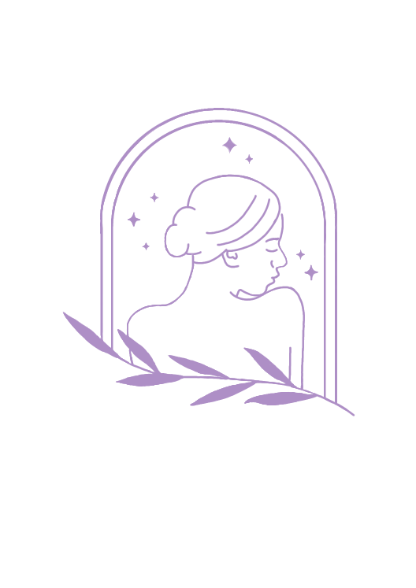

Step 1 of 4
Skip
What's your skin type?
Select all that apply to get personalized recommendations.
💧
Oily
🏜️
Dry
⚡
Acne-Prone
🌸
Sensitive
☯️
Combination
😊
Normal
Seberapa sering Anda menggunakan aplikasi sejenis?
Baru pertama kali mencoba
Pernah, tapi sudah jarang/berhenti
Sering / Pengguna aktif
Fitur apa yang paling penting untuk Anda?
Mencatat rutinitas skincare (Tracker)
Analisa bahan produk (Ingredients Scan)
Pengingat Jadwal (Reminders)
Rekomendasi Produk
Kondisi/tipe kulit saat ini seperti apa?
Sedang Breakout / Berjerawat
Kering dan Mengelupas
Kusam / Warna kulit tidak merata
Normal / Sedang dalam kondisi baik
Continue

GlowDiary
Your Skin Journey